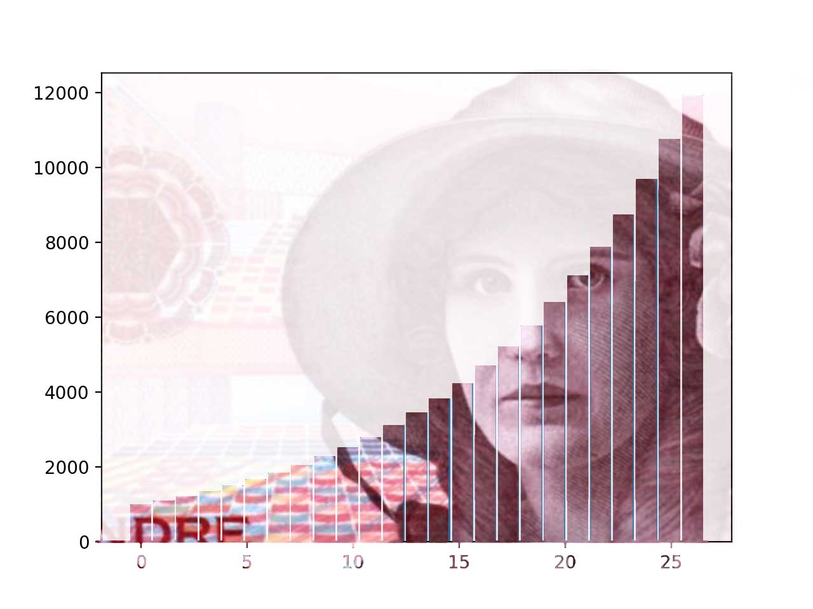

Eksponentialfunksjoner
Contents
Eksponentialfunksjoner¶
Hva er en ekspoentialfunksjon?¶
Nå er det eksponentialfunksjoner som står for tur.
Målet nå er at du skal
vite hva en eksponentialfunksjon er
vite hvordan grafen til en eksponentialfunksjon ser ut
vite hva en vekstfaktor er
kunne sette opp en eksponentialfunksjon ut fra praktiske situsjoner

Har du hørt historien om sjakkbrettet og risen?
Her er det flere historier, hvor land, navn og korntype varierer. Et sammendrag er slik:
Historien vil ha det til at da oppfinneren av sjakkbrettet viste det fram for herskeren i landet, ble herskeren så fornøyd at han ba oppfinneren om å fortelle hvordan han kunne belønnes. Oppfinneren sa at han ønsket et riskorn for den første ruta på sjakkbrettet, to for den andre, fire for den tredje, åtte for den fjerde osv.
For hver rute ønsket han en fordobling. Herskeren i landet mente at det var en beskjeden belønning og aksepterte ønsket. Det skulle vise seg at han tok feil.
Hvor mange riskorn vil det være i rute nummer 11?
Det viser seg at det etter hvert blir mange riskorn i rutene på sjakkbrettet. Nå skal du prøve å finne funksjonsuttrykket til en funksjon som har nummeret på ruta som innverdi og antall riskorn som utverdi.
Et tips er at du får bruk for potenser.
Funksjonsuttrykket til funksjonen som har rutenummer som innverdi og antall riskorn i ruta som utverdi er:
Her er \(n\) nummeret på ruta og \( a\left(n \right) \) gir antall riskorn.
Det er 64 ruter på et sjakkbrett. I den siste ruta blir det
riskorn. Det er mye ris, det! Funksjonen er et eksempel på en eksponentialfunksjon.
Her kommer en oppgave som er en oppvarming til videoen nedenfor.
Oppgave 1
Emil setter inn 2000 kr i banken på en konto som gir 2 prosent rente hvert år.
Hvor mye penger har han i banken etter
a) 1 år?
b) 2 år?
Klarer du å finne hvor mye penger han har i banken etter
c) 12 år?
I denne videoen vil du se hva en eksponentialfunksjon er og noen praktiske eksempler på slike funksjoner.
Eksponentialfunksjon
En eksponentialfunksjon skrives på formen
hvor \(a\) er startverdien og \(b\) er vekstfaktoren. Figuren under viser hvordan vekstfaktoren påvirker veksten.
!
Vekstfaktor
Dersom vi har en prosentvis vekst (eller reduksjon) vil vi få en eksponentialfunksjon. Grunntallet kaller vi for vekstfaktoren.
\(p\) prosent økning gir vekstfaktor \( k=1+ \dfrac{p}{100}\)
\(p\) prosent nedgang gir vekstfaktor \(k= 1- \dfrac{p}{100}\)